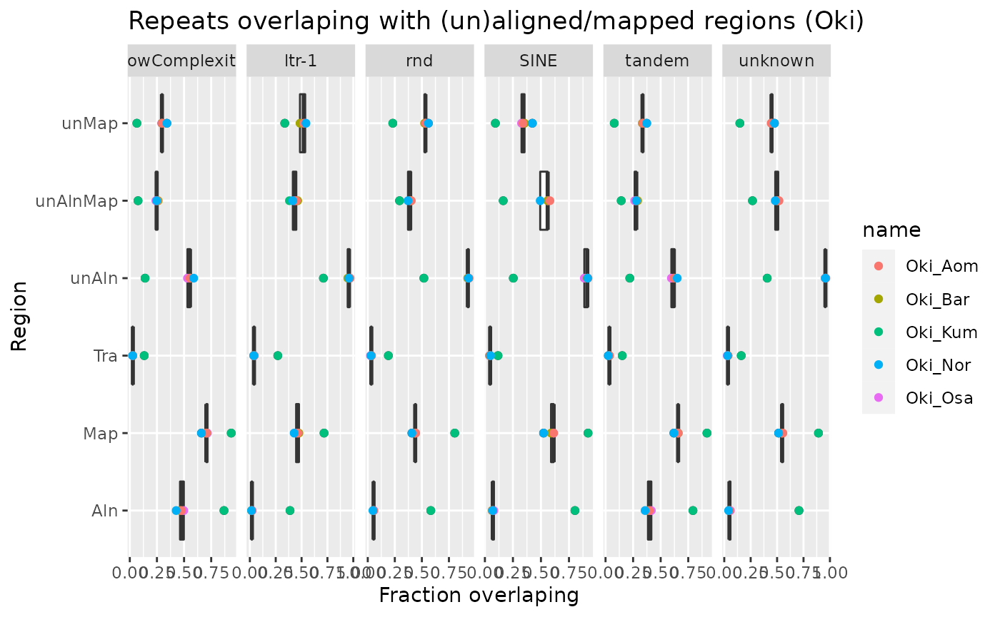
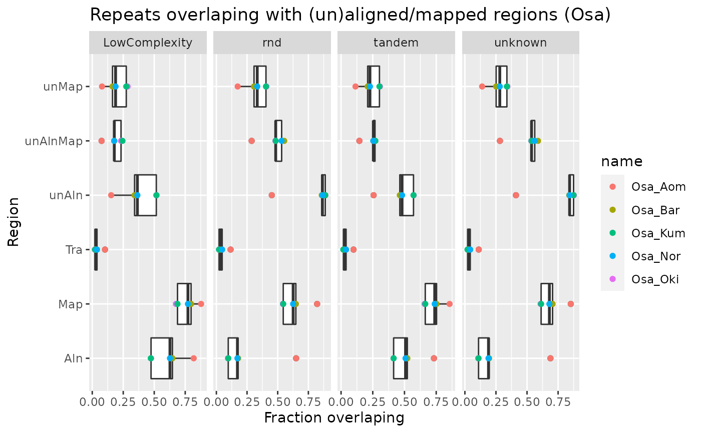
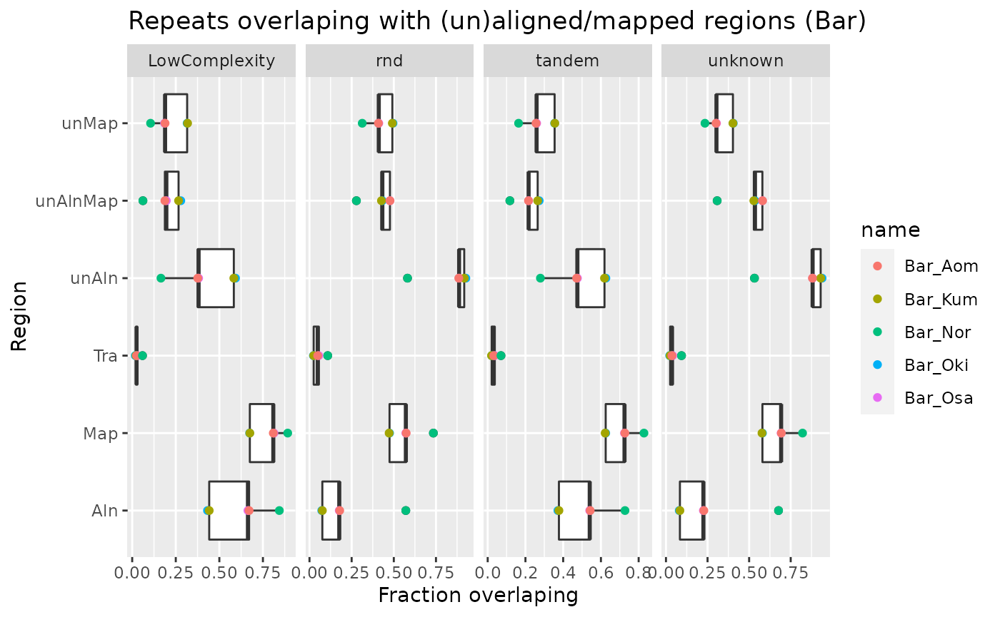
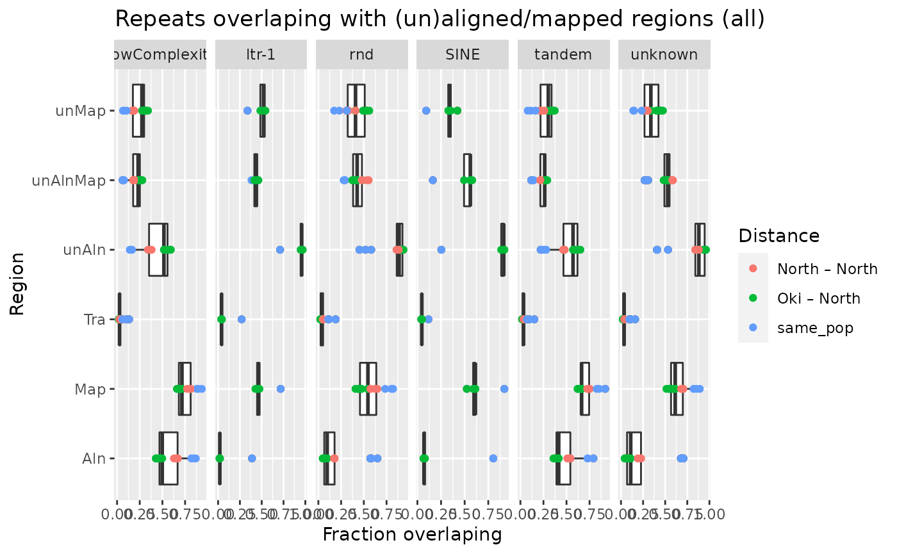

Repeat regions
Charles Plessy
09 December, 2021
Source:vignettes/RepeatRegions.Rmd
RepeatRegions.Rmd
knitr::opts_chunk$set(cache = TRUE, cache.lazy = FALSE)
knitr::opts_knit$set(verbose = TRUE)Load R pacakges and data
library('OikScrambling') |> suppressPackageStartupMessages()
(genomes <- OikScrambling:::loadAllGenomes())## List of length 6
## names(6): Oki Osa Bar Kum Aom Nor
(reps <- OikScrambling:::loadAllRepeats())## List of length 6
## names(6): Oki Osa Bar Kum Aom Nor
(load("BreakPoints.Rdata"))## [1] "gbs" "unal" "coa" "unmap" "unalMap" "tra"
## [7] "tra2" "coa2" "unmap2" "longShort"See vignette("LoadGenomicBreaks", package = "OikScrambling") for how the different GBreaks objects are prepared.
Repeat
reps_in <- list()
Oki_pairs <- c("Oki_Osa", "Oki_Bar", "Oki_Kum", "Oki_Aom", "Oki_Nor")
Osa_pairs <- c("Osa_Oki", "Osa_Bar", "Osa_Kum", "Osa_Aom", "Osa_Nor")
Bar_pairs <- c("Bar_Oki", "Bar_Osa", "Bar_Kum", "Bar_Aom", "Bar_Nor")
mkRepsIn <- function(pairs, reps) {
tableIntersectWithReps <- function(gb) {
ov <- subsetByOverlaps(reps, gb, ignore.strand = TRUE)
table(ov$Class)
}
reps_in <- list()
reps_in$total <- sapply( pairs , \(.) table(reps$Class))
reps_in$unal <- sapply(unal [pairs], tableIntersectWithReps)
reps_in$gbs <- sapply(gbs [pairs], tableIntersectWithReps)
reps_in$unmap <- sapply(unmap [pairs], tableIntersectWithReps)
reps_in$unmap2 <- sapply(unmap2 [pairs], tableIntersectWithReps)
reps_in$unalMap <- sapply(unalMap[pairs], tableIntersectWithReps)
reps_in$map <- sapply(coa [pairs], tableIntersectWithReps)
reps_in$map2 <- sapply(coa2 [pairs], tableIntersectWithReps)
reps_in$tra <- sapply(tra [pairs], tableIntersectWithReps)
reps_in
}
reps_in_Oki <- mkRepsIn(Oki_pairs, reps$Oki)
reps_in_Osa <- mkRepsIn(Osa_pairs, reps$Osa)
reps_in_Bar <- mkRepsIn(Bar_pairs, reps$Bar)
toLong <- function(m, Region = NULL) {
m <- tibble::as_tibble(m, rownames = "Class") |>
tidyr::pivot_longer(colnames(m))
if (! is.null(Region))
m <- dplyr::mutate(m, Region = Region)
m
}
reps_in_Oki.norm <- lapply(reps_in_Oki, \(x) x / reps_in_Oki$total)
reps_in_Osa.norm <- lapply(reps_in_Osa, \(x) x / reps_in_Osa$total)
reps_in_Bar.norm <- lapply(reps_in_Bar, \(x) x / reps_in_Bar$total)
toLong.reps <- function(reps_in)
rbind(
toLong(reps_in$unmap, "unMap"),
toLong(reps_in$unalMap, "unAlnMap"),
toLong(reps_in$map, "Map"),
toLong(reps_in$gbs, "Aln"),
toLong(reps_in$unal, "unAln"),
toLong(reps_in$tra, "Tra")
)
reps_in_Oki.long <- toLong.reps(reps_in_Oki)
reps_in_Osa.long <- toLong.reps(reps_in_Osa)
reps_in_Bar.long <- toLong.reps(reps_in_Bar)
reps_in_Oki.norm.long <- toLong.reps(reps_in_Oki.norm)
reps_in_Osa.norm.long <- toLong.reps(reps_in_Osa.norm)
reps_in_Bar.norm.long <- toLong.reps(reps_in_Bar.norm)Summary numbers.
sapply(reps_in_Oki.norm, rowMeans)## total unal gbs unmap unmap2 unalMap
## LowComplexity 1 0.4745682 0.54615843 0.2592019 0.2538416 0.2159619
## ltr-1 1 0.9098417 0.09239367 0.4839491 0.4380317 0.4278795
## rnd 1 0.8469141 0.15840375 0.4767686 0.4534000 0.3717560
## SINE 1 0.7780000 0.21666667 0.3073333 0.2906667 0.4713333
## tandem 1 0.5424133 0.46963753 0.2923270 0.2788326 0.2510592
## unknown 1 0.8472003 0.18038517 0.3934320 0.3749304 0.4554158
## map map2 tra
## LowComplexity 0.7440143 0.7488982 0.04812388
## ltr-1 0.5061472 0.5438063 0.08543930
## rnd 0.5060656 0.5235500 0.06265540
## SINE 0.6520000 0.6660000 0.05933333
## tandem 0.7028401 0.7153931 0.05633140
## unknown 0.6103974 0.6229990 0.05839920
sapply(reps_in_Osa.norm, rowMeans)## total unal gbs unmap unmap2 unalMap map
## LowComplexity 1 0.3786448 0.6078029 0.1980835 0.1919233 0.1811088 0.7620808
## rnd 1 0.7903099 0.2380329 0.3250682 0.3085441 0.4675399 0.6365411
## tandem 1 0.4687947 0.5182976 0.2320251 0.2235828 0.2383046 0.7338217
## unknown 1 0.7687199 0.2581531 0.2702265 0.2566158 0.5006252 0.6919545
## map2 tra
## LowComplexity 0.7663244 0.04229979
## rnd 0.6477715 0.04898429
## tandem 0.7406942 0.04011861
## unknown 0.7003997 0.04591575
sapply(reps_in_Bar.norm, rowMeans)## total unal gbs unmap unmap2 unalMap map
## LowComplexity 1 0.4195983 0.6105904 0.2225198 0.2177724 0.1979306 0.7727328
## rnd 1 0.8396612 0.2151969 0.4237909 0.4105560 0.4183102 0.5652549
## tandem 1 0.4942132 0.5121783 0.2778027 0.2751080 0.2176542 0.7055450
## unknown 1 0.8326723 0.2586960 0.3292053 0.3188757 0.5063204 0.6728492
## map2 tra
## LowComplexity 0.7755326 0.03055386
## rnd 0.5728714 0.05200550
## tandem 0.7069960 0.03617205
## unknown 0.6781281 0.04337281
ggplot(reps_in_Oki.long) + aes(Region, value) +
geom_point(aes(col = name)) + geom_boxplot() +
facet_grid(~Class, scales = "free") + coord_flip()
ggplot(reps_in_Osa.long) + aes(Region, value) +
geom_point(aes(col = name)) + geom_boxplot() +
facet_grid(~Class, scales = "free") + coord_flip()
ggplot(reps_in_Bar.long) + aes(Region, value) +
geom_point(aes(col = name)) + geom_boxplot() +
facet_grid(~Class, scales = "free") + coord_flip()
ggplot(reps_in_Oki.norm.long) + aes(Region, value) +
geom_boxplot() + geom_point(aes(col = name)) +
facet_grid(~Class, scales = "free") + coord_flip() +
ylab("Fraction overlaping") +
ggtitle("Repeats overlaping with (un)aligned/mapped regions (Oki)")
ggplot(reps_in_Osa.norm.long) + aes(Region, value) +
geom_boxplot() + geom_point(aes(col = name)) +
facet_grid(~Class, scales = "free") + coord_flip() +
ylab("Fraction overlaping") +
ggtitle("Repeats overlaping with (un)aligned/mapped regions (Osa)")
ggplot(reps_in_Bar.norm.long) + aes(Region, value) +
geom_boxplot() + geom_point(aes(col = name)) +
facet_grid(~Class, scales = "free") + coord_flip() +
ylab("Fraction overlaping") +
ggtitle("Repeats overlaping with (un)aligned/mapped regions (Bar)")
ggplot(rbind(
reps_in_Oki.norm.long,
reps_in_Osa.norm.long,
reps_in_Bar.norm.long
) |> dplyr::mutate(Distance = OikScrambling:::compDistance(name))) + aes(Region, value) +
geom_boxplot() + geom_point(aes(col = Distance)) +
facet_grid(~Class, scales = "free") + coord_flip() +
ylab("Fraction overlaping") +
ggtitle("Repeats overlaping with (un)aligned/mapped regions (all)")
Tracking repeats across genome pairs
The upset plots below show whether a repeat in the Okinawa or the Osaka genome as target genome is located in an given region in respect to one or many of the query genomes.
Note: Some repeat annotations overlap.
Aligned
More than 10,000 repeat annotations are in regions aligned to the same-population control genome, demonstrating that they are mapable in principle.
isPresent <- function(r, gb) ifelse(countOverlaps(r,gb) == 0, 0, 1)
alignedRepsOki <- data.frame(
align_Osa = isPresent(reps$Oki, gbs$Oki_Osa),
align_Aom = isPresent(reps$Oki, gbs$Oki_Aom),
align_Bar = isPresent(reps$Oki, gbs$Oki_Bar),
align_Nor = isPresent(reps$Oki, gbs$Oki_Nor),
align_Kum = isPresent(reps$Oki, gbs$Oki_Kum)
)
UpSetR::upset(alignedRepsOki)
alignedRepsOsa <- data.frame(
align_Oki = isPresent(reps$Osa, gbs$Osa_Oki),
align_Bar = isPresent(reps$Osa, gbs$Osa_Bar),
align_Nor = isPresent(reps$Osa, gbs$Osa_Nor),
align_Kum = isPresent(reps$Osa, gbs$Osa_Kum),
align_Aom = isPresent(reps$Osa, gbs$Osa_Aom)
)
UpSetR::upset(alignedRepsOsa)
alignedRepsBar <- data.frame(
align_Oki = isPresent(reps$Bar, gbs$Bar_Oki),
align_Osa = isPresent(reps$Bar, gbs$Bar_Osa),
align_Nor = isPresent(reps$Bar, gbs$Bar_Nor),
align_Kum = isPresent(reps$Bar, gbs$Bar_Kum),
align_Aom = isPresent(reps$Bar, gbs$Bar_Aom)
)
UpSetR::upset(alignedRepsBar)
Unaligned
~40,000 repeat annotations are in regions that are not aligned to a different-population_query_ genome. This might be caused by insertions and deletions.
unalignedRepsOki <- data.frame(
unal_Osa = isPresent(reps$Oki, unal$Oki_Osa),
unal_Aom = isPresent(reps$Oki, unal$Oki_Aom),
unal_Bar = isPresent(reps$Oki, unal$Oki_Bar),
unal_Nor = isPresent(reps$Oki, unal$Oki_Nor),
unal_Kum = isPresent(reps$Oki, unal$Oki_Kum)
)
UpSetR::upset(unalignedRepsOki)
unalignedRepsOsa <- data.frame(
unal_Oki = isPresent(reps$Osa, unal$Osa_Oki),
unal_Bar = isPresent(reps$Osa, unal$Osa_Bar),
unal_Nor = isPresent(reps$Osa, unal$Osa_Nor),
unal_Kum = isPresent(reps$Osa, unal$Osa_Kum),
unal_Aom = isPresent(reps$Osa, unal$Osa_Aom)
)
UpSetR::upset(unalignedRepsOsa)
alignedRepsBar <- data.frame(
unal_Oki = isPresent(reps$Bar, unal$Bar_Oki),
unal_Osa = isPresent(reps$Bar, unal$Bar_Osa),
unal_Nor = isPresent(reps$Bar, unal$Bar_Nor),
unal_Kum = isPresent(reps$Bar, unal$Bar_Kum),
unal_Aom = isPresent(reps$Bar, unal$Bar_Aom)
)
UpSetR::upset(alignedRepsBar)
Mapped
mappedRepsOki <- data.frame(
mapped_Osa = isPresent(reps$Oki, coa$Oki_Osa),
mapped_Aom = isPresent(reps$Oki, coa$Oki_Aom),
mapped_Bar = isPresent(reps$Oki, coa$Oki_Bar),
mapped_Nor = isPresent(reps$Oki, coa$Oki_Nor),
mapped_Kum = isPresent(reps$Oki, coa$Oki_Kum)
)
UpSetR::upset(mappedRepsOki)
mappedRepsOsa <- data.frame(
mapped_Oki = isPresent(reps$Osa, coa$Osa_Oki),
mapped_Bar = isPresent(reps$Osa, coa$Osa_Bar),
mapped_Nor = isPresent(reps$Osa, coa$Osa_Nor),
mapped_Kum = isPresent(reps$Osa, coa$Osa_Kum),
mapped_Aom = isPresent(reps$Osa, coa$Osa_Aom)
)
UpSetR::upset(mappedRepsOsa)
mappedRepsBar <- data.frame(
mapped_Oki = isPresent(reps$Bar, coa$Bar_Oki),
mapped_Osa = isPresent(reps$Bar, coa$Bar_Osa),
mapped_Nor = isPresent(reps$Bar, coa$Bar_Nor),
mapped_Kum = isPresent(reps$Bar, coa$Bar_Kum),
mapped_Aom = isPresent(reps$Bar, coa$Bar_Aom)
)
UpSetR::upset(mappedRepsBar)
Unmapped
unmappedRepsOki <- data.frame(
unmapped_Osa = isPresent(reps$Oki, unmap$Oki_Osa),
unmapped_Aom = isPresent(reps$Oki, unmap$Oki_Aom),
unmapped_Bar = isPresent(reps$Oki, unmap$Oki_Bar),
unmapped_Nor = isPresent(reps$Oki, unmap$Oki_Nor),
unmapped_Kum = isPresent(reps$Oki, unmap$Oki_Kum)
)
UpSetR::upset(unmappedRepsOki)
unmappedRepsOsa <- data.frame(
unmapped_Oki = isPresent(reps$Osa, unmap$Osa_Oki),
unmapped_Bar = isPresent(reps$Osa, unmap$Osa_Bar),
unmapped_Nor = isPresent(reps$Osa, unmap$Osa_Nor),
unmapped_Kum = isPresent(reps$Osa, unmap$Osa_Kum),
unmapped_Aom = isPresent(reps$Osa, unmap$Osa_Aom)
)
UpSetR::upset(unmappedRepsOsa)
unmappedRepsBar <- data.frame(
unmapped_Oki = isPresent(reps$Bar, unmap$Bar_Oki),
unmapped_Osa = isPresent(reps$Bar, unmap$Bar_Osa),
unmapped_Nor = isPresent(reps$Bar, unmap$Bar_Nor),
unmapped_Kum = isPresent(reps$Bar, unmap$Bar_Kum),
unmapped_Aom = isPresent(reps$Bar, unmap$Bar_Aom)
)
UpSetR::upset(unmappedRepsBar)
Unaligned but mapped by flanking colinear blocks
unalMapRepsOki <- data.frame(
unalMap_Osa = isPresent(reps$Oki, unalMap$Oki_Osa),
unalMap_Aom = isPresent(reps$Oki, unalMap$Oki_Aom),
unalMap_Bar = isPresent(reps$Oki, unalMap$Oki_Bar),
unalMap_Nor = isPresent(reps$Oki, unalMap$Oki_Nor),
unalMap_Kum = isPresent(reps$Oki, unalMap$Oki_Kum)
)
UpSetR::upset(unalMapRepsOki)
unalMapRepsOsa <- data.frame(
unalMap_Oki = isPresent(reps$Osa, unalMap$Osa_Oki),
unalMap_Bar = isPresent(reps$Osa, unalMap$Osa_Bar),
unalMap_Nor = isPresent(reps$Osa, unalMap$Osa_Nor),
unalMap_Kum = isPresent(reps$Osa, unalMap$Osa_Kum),
unalMap_Aom = isPresent(reps$Osa, unalMap$Osa_Aom)
)
UpSetR::upset(unalMapRepsOsa)
unalMapRepsBar <- data.frame(
unalMap_Oki = isPresent(reps$Bar, unalMap$Bar_Oki),
unalMap_Osa = isPresent(reps$Bar, unalMap$Bar_Osa),
unalMap_Nor = isPresent(reps$Bar, unalMap$Bar_Nor),
unalMap_Kum = isPresent(reps$Bar, unalMap$Bar_Kum),
unalMap_Aom = isPresent(reps$Bar, unalMap$Bar_Aom)
)
UpSetR::upset(unalMapRepsBar)
Transposed
traRepsOki <- data.frame(
tra_Osa = isPresent(reps$Oki, tra$Oki_Osa),
tra_Aom = isPresent(reps$Oki, tra$Oki_Aom),
tra_Bar = isPresent(reps$Oki, tra$Oki_Bar),
tra_Nor = isPresent(reps$Oki, tra$Oki_Nor),
tra_Kum = isPresent(reps$Oki, tra$Oki_Kum)
)
UpSetR::upset(traRepsOki)
traRepsOsa <- data.frame(
tra_Oki = isPresent(reps$Osa, tra$Osa_Oki),
tra_Bar = isPresent(reps$Osa, tra$Osa_Bar),
tra_Nor = isPresent(reps$Osa, tra$Osa_Nor),
tra_Kum = isPresent(reps$Osa, tra$Osa_Kum),
tra_Aom = isPresent(reps$Osa, tra$Osa_Aom)
)
UpSetR::upset(traRepsOsa)
traRepsBar <- data.frame(
tra_Oki = isPresent(reps$Bar, tra$Bar_Oki),
tra_Osa = isPresent(reps$Bar, tra$Bar_Osa),
tra_Nor = isPresent(reps$Bar, tra$Bar_Nor),
tra_Kum = isPresent(reps$Bar, tra$Bar_Kum),
tra_Aom = isPresent(reps$Bar, tra$Bar_Aom)
)
UpSetR::upset(traRepsBar)
Repeat annotation of the GBreaks objects
See vignette("LoadGenomicBreaks", package = "OikScrambling") for how the different GBreaks objects are annotated.
countGbsMatchingReps <- function(gb) sum(sapply(gb$rep, \(x) ! any(is.na(x))))
fracGbsMatchingReps <- function(gbl) sapply(gbl, countGbsMatchingReps) / sapply(gbl, length)
summaryMatchingReps <- (sapply(list(aligned = gbs[1:15], unAligned = unal[1:15],
mapped = coa[1:15], unMapped = unmap[1:15],
unAlMapped = unalMap[1:15],
transposed = tra[1:15], transposed2 = tra2[1:15],
mapped2 = coa2[1:15], unMapped2 = unmap2[1:15]),
fracGbsMatchingReps))
summaryMatchingReps |> tibble::as_tibble() |>
dplyr::group_by(dist=rownames(summaryMatchingReps) |> OikScrambling:::compDistance()) |>
dplyr::summarise_all(mean)## # A tibble: 3 × 10
## dist aligned unAligned mapped unMapped unAlMapped transposed transposed2
## <chr> <dbl> <dbl> <dbl> <dbl> <dbl> <dbl> <dbl>
## 1 North – N… 0.168 0.494 0.497 0.487 0.487 0.617 0.739
## 2 Oki – Nor… 0.0720 0.360 0.312 0.381 0.349 0.502 0.602
## 3 same_pop 0.503 0.598 0.652 0.580 0.535 0.702 0.825
## # … with 2 more variables: mapped2 <dbl>, unMapped2 <dbl>Reduced repeat set
Old plots; they show that the above is also true if we merge overlapping repeats.
reps.reduced <- sapply(reps, reduce, ignore.strand = TRUE) |> SimpleList()
# They are short.
sapply(reps.reduced, \(gr) summary(width(gr)))## Oki Osa Bar Kum Aom Nor
## Min. 15.0000 9.0000 12.0000 13.0000 11.0000 11.0000
## 1st Qu. 58.0000 66.0000 57.0000 59.0000 67.0000 63.0000
## Median 129.0000 159.0000 143.0000 134.0000 157.0000 152.0000
## Mean 293.5162 226.8387 267.7418 278.6945 239.4878 295.5797
## 3rd Qu. 281.0000 286.0000 267.0000 292.0000 282.0000 330.0000
## Max. 25734.0000 9208.0000 62015.0000 24020.0000 41142.0000 17402.0000Colinearity interruptors (unmapped regions ?)
(reps_coa <- tibble::tibble(
pairname = Oki_pairs,
total = length(reps.reduced$Oki),
match_unmap = sapply(unmap[Oki_pairs], \(gb) length(subsetByOverlaps(reps.reduced$Oki, gb))),
match_map = sapply( coa[Oki_pairs], \(gb) length(subsetByOverlaps(reps.reduced$Oki, gb))),
mapped = match_map / total * 100,
unmapped = match_unmap / total * 100,
sum = mapped + unmapped
))## # A tibble: 5 × 7
## pairname total match_unmap match_map mapped unmapped sum
## <chr> <int> <int> <int> <dbl> <dbl> <dbl>
## 1 Oki_Osa 31520 14906 16185 51.3 47.3 98.6
## 2 Oki_Bar 31520 14804 16150 51.2 47.0 98.2
## 3 Oki_Kum 31520 5351 27409 87.0 17.0 104.
## 4 Oki_Aom 31520 14898 16339 51.8 47.3 99.1
## 5 Oki_Nor 31520 15834 15177 48.2 50.2 98.4
ggplot(reps_coa |> tidyr::pivot_longer(c("mapped", "unmapped"))) +
aes(name, value) +
ggtitle("Matches of repeats to mapped or unmaped regions") +
scale_y_continuous(limits = c(0, 100)) +
ylab("Percent of the repeat regions") +
xlab("Matching to region:") +
geom_boxplot() +
geom_point(aes(col = pairname))
Unaligned regions
(reps_gbs <- tibble::tibble(
pairname = Oki_pairs,
total = length(reps.reduced$Oki),
match_unal = sapply(unal[Oki_pairs], \(gb) length(subsetByOverlaps(reps.reduced$Oki, gb))),
match_al = sapply(gbs[Oki_pairs], \(gb) length(subsetByOverlaps(reps.reduced$Oki, gb))),
aligned = match_al / total * 100,
unaligned = match_unal / total * 100,
sum = aligned + unaligned
))## # A tibble: 5 × 7
## pairname total match_unal match_al aligned unaligned sum
## <chr> <int> <int> <int> <dbl> <dbl> <dbl>
## 1 Oki_Osa 31520 26475 5178 16.4 84.0 100.
## 2 Oki_Bar 31520 26762 4712 14.9 84.9 99.9
## 3 Oki_Kum 31520 12735 22222 70.5 40.4 111.
## 4 Oki_Aom 31520 26910 4906 15.6 85.4 101.
## 5 Oki_Nor 31520 27116 4379 13.9 86.0 99.9
ggplot(reps_gbs |> tidyr::pivot_longer(c("aligned", "unaligned"))) +
aes(name, value) +
ggtitle("Matches of repeats to aligned or unaligned regions") +
scale_y_continuous(limits = c(0, 100)) +
ylab("Percent of the repeat regions") +
xlab("Matching to region:") +
geom_boxplot() +
geom_point(aes(col = pairname))